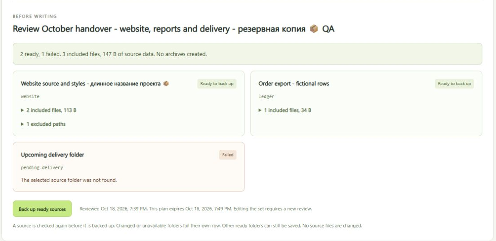
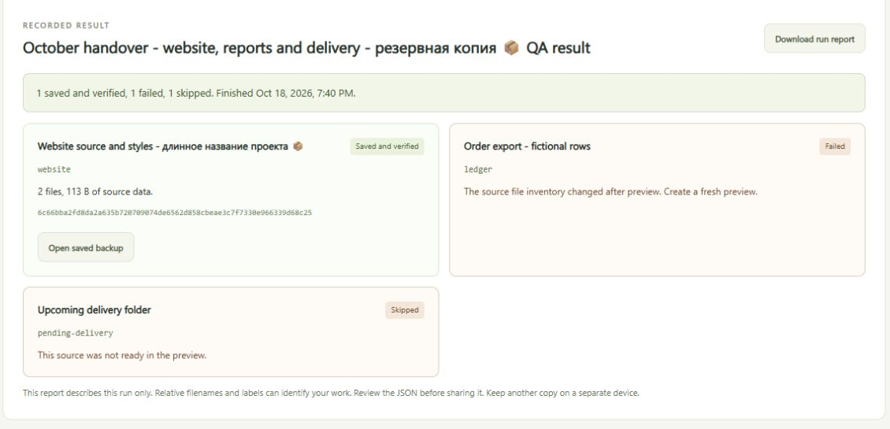
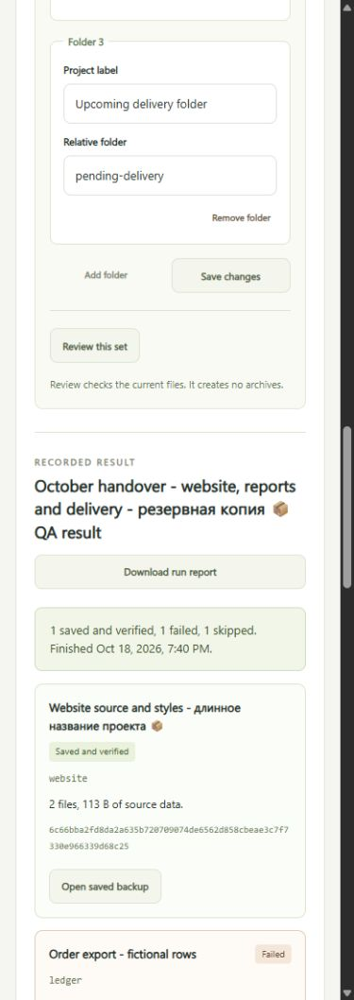

Workbench guide
Several projects. One clear review.
Folders that belong together, a verified copy of each.
archive-desk-workbench-0.5-source.zip9851 847b ... 2664 73b4

Keep the folder list.
Up to 12 sets of 8 folders.
Check each source first.
Paths, sizes and fingerprints. Reviews expire after ten minutes.
Partial stays partial.
Changed folders fail, unreviewed ones are skipped.

Try it
- Start the app. The overview shows how.
- Choose Backup sets. Enter a set name, then a label and relative folder for each project.
- Save the set and select Review this set.
- Read every ready and failed row, then select Back up ready sources. The result is saved to run history.

Changed files need a fresh review
Each folder is rescanned right before backup and must match its review.
Each review is used once.
To recover, Open saved backup selects the exact completed copy. From there you can verify it, compare changes or review a recovery into a new folder.
Limits
- Up to 500 files, 20 MiB per file, 50 MiB of source data and a 52 MiB archive for each folder.
- Exclusions work by filename, so check the included paths yourself.
- No schedule, retention cleanup or cloud sync, and source files are never edited.
- Close programs that might change files during the run. A scan is not an atomic snapshot.